Case studies
Selected projects
Three projects that show how I think — from finding a real problem to making a design decision I can defend, across product types, team contexts, and research methods.
Reelio — Designing the platform the film industry has been missing
From research to high-fidelity prototype: a full solo UX project tackling the real problem of hiring freelance film crews under time pressure.
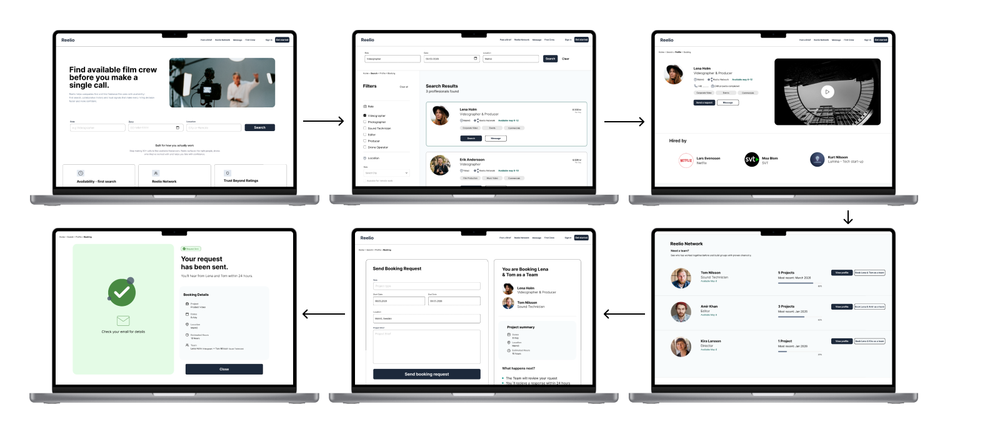
Full design flow: all 5 screens in a row — Search → Results → Profile → Reelio Network → Booking. Export the frame named "Full design flow" at 2x.
Recommended: 1600 × 700px · save as reelio-flow.pngThe brief
Design a platform that helps companies find and hire freelancers for film and content production — faster, safer, and with more confidence than anything currently available.
My role
Sole designer across the entire project: research, competitor analysis, persona, information architecture, wireframing, two rounds of usability testing, design system, and high-fidelity prototype.
The problem
Finding a film crew can take 50 phone calls. That's not a quirk — it's a design failure.
I started with three semi-structured interviews with people who hire freelancers for video production — from TV producers to creative directors at advertising agencies. One quote cut to the heart of it immediately:
"I call all kinds of people until I find someone. It can be 50 calls sometimes."
The problem wasn't that these professionals lacked networks. It was that their networks were invisible to any platform. They fell back on WhatsApp groups, Facebook posts, and word of mouth — not because they preferred it, but because the platforms built for this industry couldn't answer the one question that matters most: who is actually available on the dates I need?
I also ran a competitor and benchmark analysis across five existing platforms — ProductionHUB, Storyhunter, Mandy, Upwork, and others. Every single one was built around individual freelancer search. None showed availability before you reached out. None showed whether two freelancers had ever worked together. None were built around the hiring decision — just the hiring search. That gap became Reelio's entire design opportunity.
Design decisions — structure
Six design principles, one guiding rule: reduce time to confidence
Before touching a single screen, I wrote six design principles to keep decisions anchored to the research. The most important: every screen had to help Sara (my persona) feel certain faster — less searching, less uncertainty, less back-and-forth before committing to a hire.
The information architecture followed directly from three core opportunities identified in research: availability-first search, the Reelio Network (collaboration history), and trust without ratings. I ran a mobile-first wireframing process and embedded WCAG 2.1 accessibility from the wireframe stage, not as a retrofit.
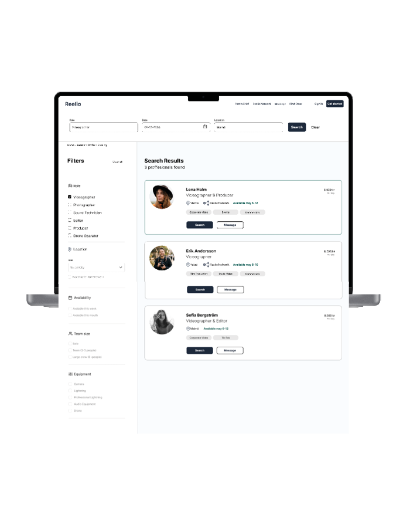
Search screen — shows role, date, location filters and availability-first results.
700 × 900px · reelio-search.png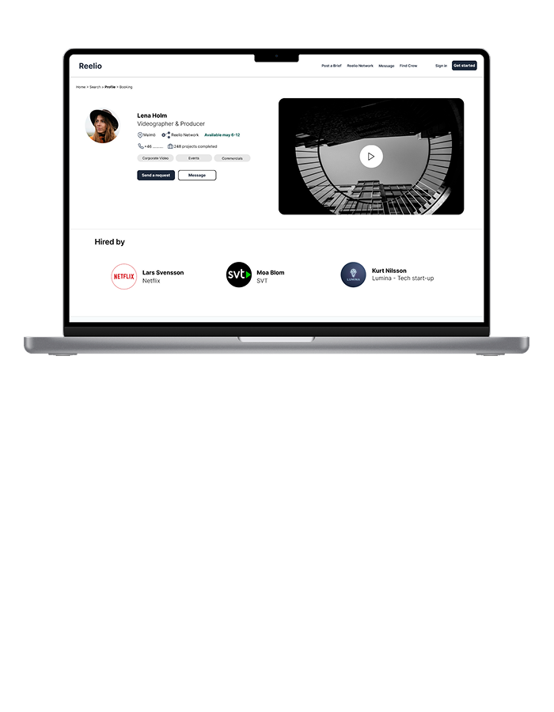
Freelancer profile — hi-fi version with "Hired by" at the very top of the page.
700 × 900px · reelio-profile.pngRound 1 — Lo-fi usability testing
The Reelio Network confused everyone. And that told me exactly what to fix.
Three participants completed moderated remote sessions — a TV production project manager, an advertising creative director, and a tech company project manager. Three critical errors surfaced:
- 100% of participants could not understand the Reelio Network without assistance. The concept was right — the context was absent.
- "Booking confirmed" created false expectations. Participants believed the booking was final before the freelancer had accepted.
- The "Book this team" button appeared before users understood who the team was — and was scrolled past without engaging.
Alongside these failures: all three completed the search task successfully, and all three said they would use Reelio if it existed. The core concept was sound. The execution needed surgery in specific places.
From insight to design
Three specific changes, each traceable to a specific finding
| What I found | What I changed |
|---|---|
| Nobody understood the Reelio Network | Added clear label "People Lena has worked with before on Reelio" and repositioned the button inside the section, after the context |
| "Booking confirmed" misled users | Changed to "Booking request sent" with 24h window explanation and visible booking details |
| "Hired by" was buried — strongest trust signal seen last | Moved "Hired by" to the very top of the profile |
Each before/after pair below shows one finding translated directly into a design change:
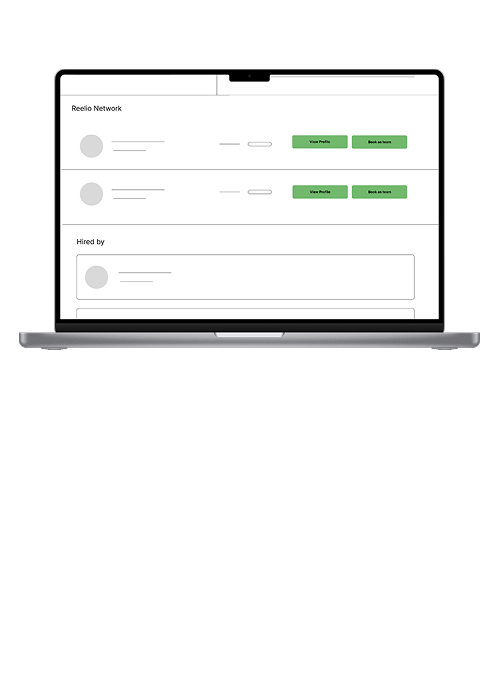
Lo-fi Reelio Network screen — no label, no context, button placed too early.
500 × 700px · reelio-before-network.png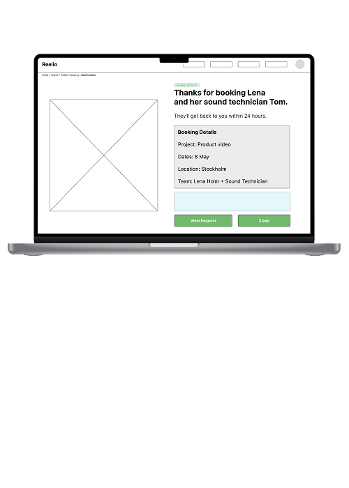
Lo-fi booking confirmation screen — "Booking confirmed" copy that misled users.
500 × 700px · reelio-before-booking.png 500 × 700px · reelio-before-profile.png
500 × 700px · reelio-before-profile.png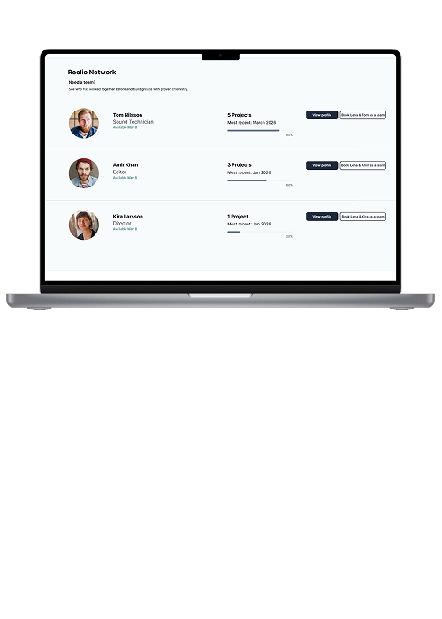
Hi-fi Reelio Network — with label \"People Lena has worked with before on Reelio\" and button repositioned below the team context.
500 × 700px · reelio-after-network.png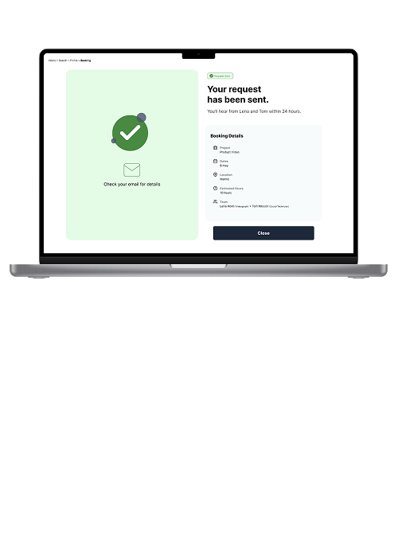
Hi-fi booking confirmation — "Booking request sent" with 24h window, dates, rate and total visible.
500 × 700px · reelio-after-booking.png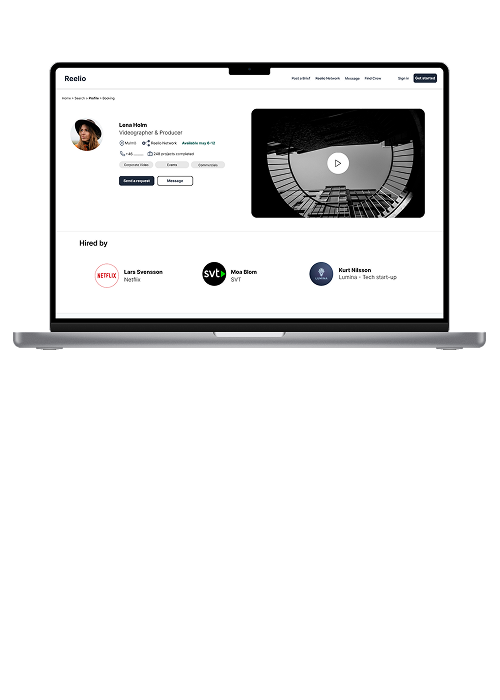
Hi-fi profile — "Hired by" now the very first element users see at the top of the profile page.
500 × 700px · reelio-after-profile.pngThe design system was built on Untitled UI, customised with slate (#94A3B8) and teal (#3D6B5E). Slate reads as cinematic and professional; teal signals availability and primary actions. Every component met WCAG 2.1 AA contrast ratios from the start.
Round 2 — Hi-fi usability testing
Average ease score: 9.2. Average recommendation: 9.7. All three tasks completed.
Two participants had also taken part in the lo-fi test, so the improvement was visible directly. "It feels more clearly than before. A significant upgrade." and "A bit like a good LinkedIn, but more focused."
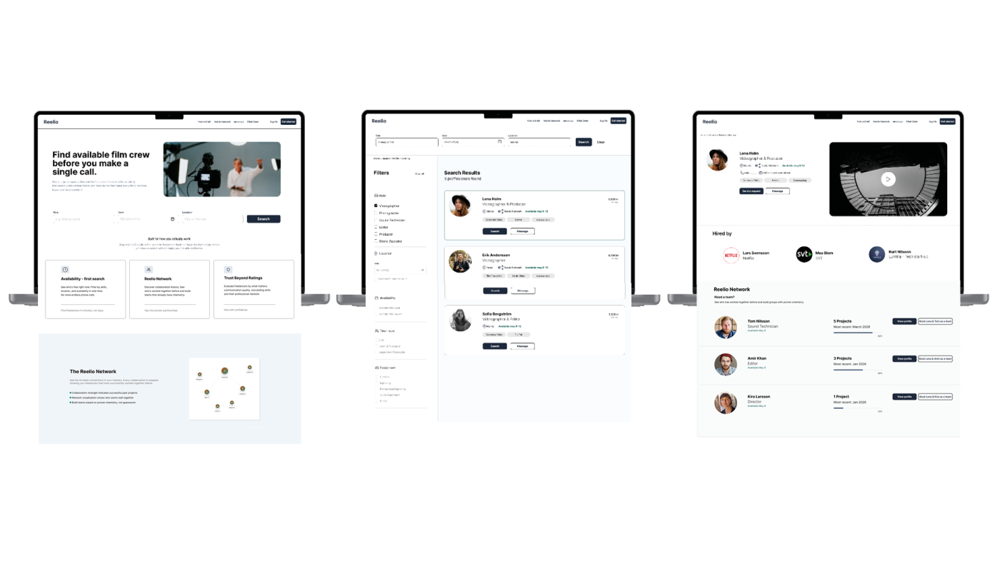
A clean overview of your final hi-fi screens — desktop layout showing Search Results, Profile and the Reelio Network side by side. Use the frame you are most proud of visually.
Recommended: 1400 × 800px · reelio-hifi-overview.pngWhat still needs iteration
Five areas remain: portfolio thumbnail previews in search results; a clear ranking or relevance signal; clearer explanation of Reelio Network percentages; transparent total pricing; and a short personal freelancer bio. These are the starting points for the next design sprint.
What I learned
Research is only useful if it stays visible during design
The most important thing I practised here was keeping research present throughout — not just as a phase that happened before, but as an active reference. Every change in the hi-fi prototype is traceable back to a specific finding. When a participant said "Hired by feels like very relevant information and should be moved up," that quote became a design requirement, not a suggestion. That traceability — from behaviour to decision — is the discipline I want to bring to every project I work on.
Yobr — Designing a mobile app that connects students to real-world work
From first prototype to A/B tested iteration — and extended to Apple Watch for a full cross-platform experience.
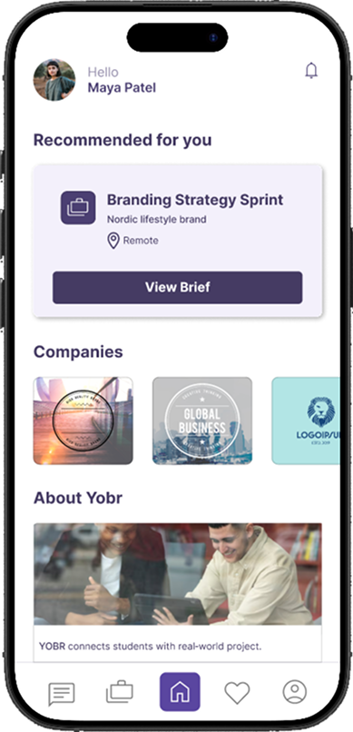
Yobr home screen (Design B). Shows the Recommended for you card, Companies section, and bottom nav with active state highlight.
390 × 844px (iPhone frame) · yobr-home.png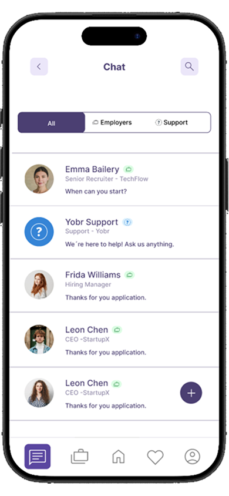
Yobr chat screen Design B — shows the All / Employers / Support tabs, role labels under each name, and Yobr Support as a pinned contact.
390 × 844px (iPhone frame) · yobr-chat-b.pngThe brief
Design a mobile app for Yobr — a platform that connects students with internships, projects, and companies tailored to their skills and interests.
My role
Solo designer across the full process: user flow, wireframing, high-fidelity prototype, design review, and two rounds of user testing including an A/B comparison.
The challenge
How do you make a job platform feel personal, not overwhelming?
I designed the full experience from splash screen to live chat with a company. Every decision had to earn its place — short onboarding, illustrated screens that set the tone, a home feed that showed relevant content immediately after sign-up, and a chat feature with real communicative value.
First test — key insights
What the first round of user testing taught me
After a moderated design review session using the think-aloud method, five clear insights emerged. The most actionable: the chat feature's value depended entirely on who you could contact — and if Yobr itself wasn't available as a contact, the feature felt purposeless.
A/B test — Design A vs Design B
The chat redesign was the most significant change — and the most validated
I created Design B with targeted improvements: category tabs (All / Employers / Support) and role labels in chat, a "Yobr Support" contact, a more prominent recommended project card, card shadows on company tiles, and a background highlight on the active nav tab. I then ran a moderated A/B usability test comparing both versions directly.
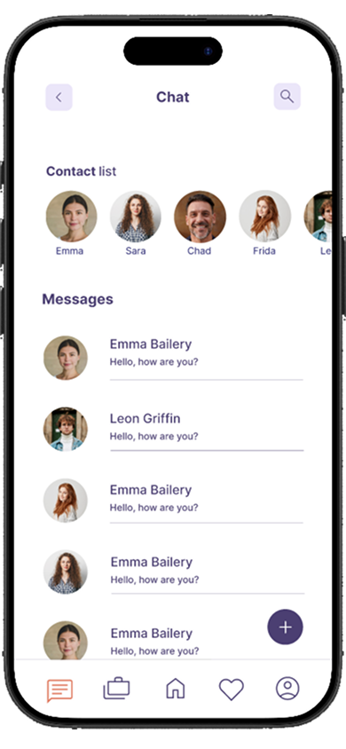
Chat screen Design A — flat message list with no tabs, no role labels, no Yobr Support contact. This is the original prototype.
390 × 844px · yobr-chat-a.png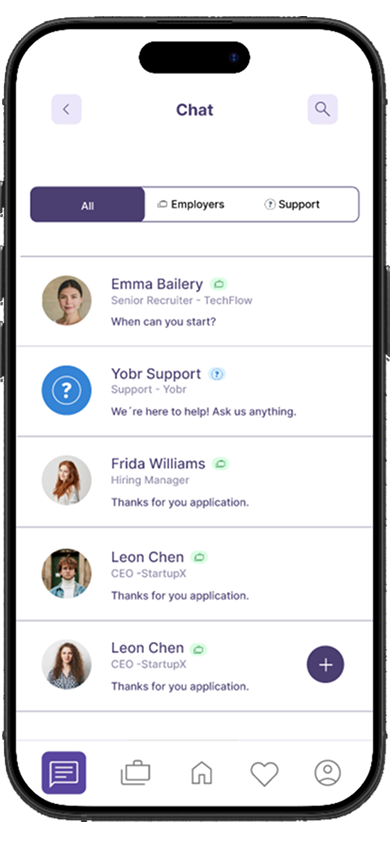
Chat screen Design B — with All / Employers / Support tabs, role labels under each contact name, and Yobr Support as a pinned contact at the top.
390 × 844px · yobr-chat-b-2.png| Category | Design A | Design B |
|---|---|---|
| App purpose clarity | 5/5 | 5/5 |
| Understanding who you can contact | 3/5 | 5/5 |
| Chat clarity | 3/5 | 5/5 |
What I'd do next
Replace the suitcase icon in navigation with a clearer label. Redesign onboarding to be more visual and interactive — users skipped text-heavy instructions in both prototypes. Add a lightweight post-signup flow for skills and interests, preserving sign-up simplicity while still improving recommendation quality.
Cross-platform — Apple Watch
The smartwatch gave the app a completely different dimension
As part of the UXM module I extended Yobr to Apple Watch, designing a companion experience that works alongside the mobile app. The core idea: each device has exactly one job. The watch captures attention — glanceable notifications, two quick actions. The phone converts intent — full brief, apply or save. The desktop supports completion — portfolio upload, final review.
Designing for watchOS forced radical prioritisation. A screen smaller than a postage stamp has no room for anything that isn't essential. Every watch interaction resolves in a single tap, with immediate confirmation so the user never wonders if it worked.
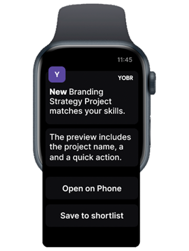
Apple Watch notification screen — Yobr app icon, project name bold, one-line description, two action buttons: Open on Phone and Save to shortlist.
368 × 448px (watch frame at 2x) · yobr-watch-notification.png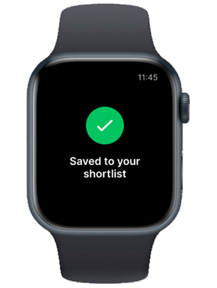
Apple Watch confirmation screen — green checkmark, text: Saved to your shortlist. Minimal, immediate feedback.
368 × 448px · yobr-watch-saved.png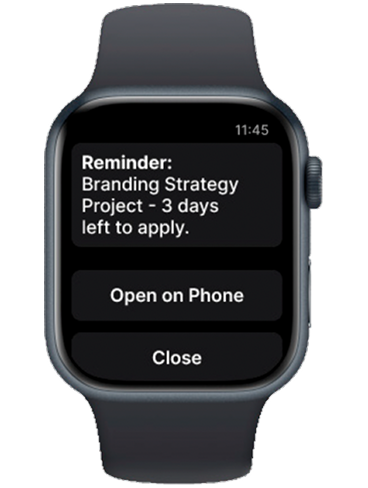
Apple Watch reminder screen — project name, “3 days left to apply”, Open on Phone as primary action, Close as secondary.
368 × 448px · yobr-watch-reminder.pngThe device handoff moment
When the user taps "Open on Phone" on the watch, the phone wakes from the lock screen directly into the project brief — and the watch shows "Successfully opened on phone." That confirmation is a small detail, but it's where the cross-platform promise is either kept or broken.
NordicC — Making cybersecurity feel human for small business owners
A full design thinking project: from user interviews to a tested, iterated platform for non-technical SMB owners.
I contributed across the full process as one of three designers. My specific focus areas: research synthesis, persona and scenario development, wireflow design, Guided Fixes annotations, the Peace of Mind Report screens, and the usability testing report and recommendations.
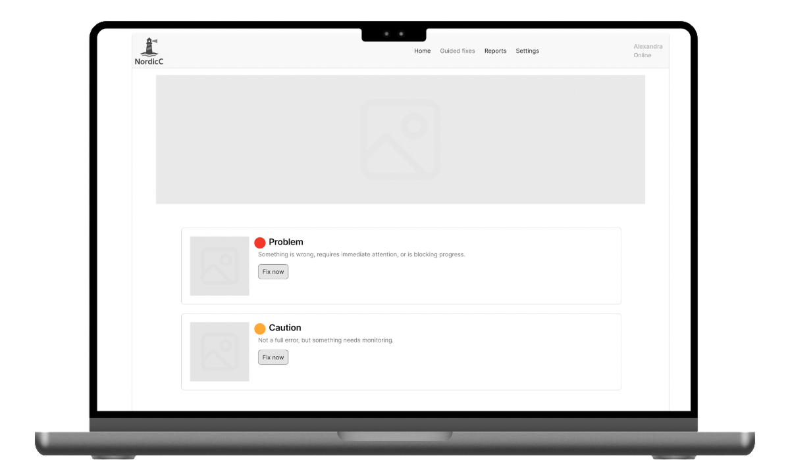
The Guided Fixes screen — shows the updated design with Red (Problem), Orange (Caution) and no Green card. Each card has a plain-language description and a Fix now button. This is the recommended post-testing version.
Recommended: 1200 × 700px · nordicc-guided-fixes.pngThe brief
Design a cybersecurity support platform for small to medium businesses — using AI-driven features to help non-technical owners understand and respond to security risks.
The team
Joanna Jensen Sjönvall (me), Angelina Ljungberg, and Thea Traasdahl Johansen — collaborating entirely remotely across Norway and Sweden.
The problem
Small businesses aren't failing at cybersecurity because they don't care — they're failing because existing tools weren't built for them
Our research found the same thing across every interview: these owners understood the risk. They just couldn't act on it. The tools they encountered were built for IT teams. The alerts felt like spam. The dashboards were overwhelming.
"To trust a security warning, it has to feel real and important — not just noise that I end up ignoring."
The design response had to be built around removing friction, not adding features. We made a deliberate decision not to build a traditional security dashboard — and we could justify that choice with our research.
Usability testing
What we built was mostly right — and one thing was clearly wrong
Three participants matched our persona profile. Two task scenarios: responding to a security notification, and opening the monthly report. The results split cleanly into what worked and what needed changing.
- The "Fix it now" button worked immediately. Users understood it, trusted it, and wanted to click it.
- Yellow was too close to "safe." Users weren't responding with the right urgency — we replaced it with orange.
- 67% found the Peace of Mind Report unclear or unnecessary when nothing had changed. Reports should only appear when something meaningful has happened.
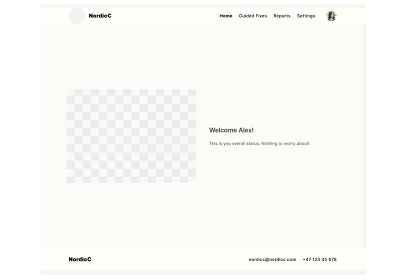
NordicC original homepage wireframe — shows the mid-fi Lighthouse View layout before the usability test recommendations were applied.
800 × 550px · nordicc-home-before.png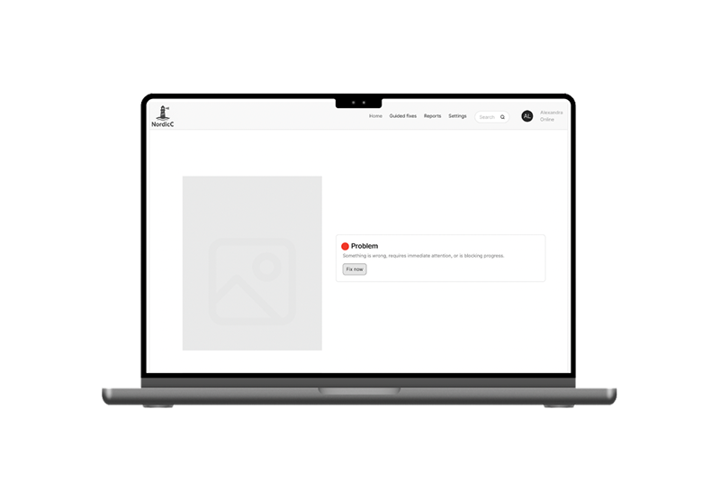
NordicC recommended homepage redesign — single red lighthouse icon, one-line plain-language problem description, prominent Fix now button. No pop-ups.
800 × 550px · nordicc-home-after.pngKey changes from testing
Replaced yellow with orange for mid-severity (yellow read as "safe"). Removed the separate report notification and consolidated into a single in-app view. Simplified Guided Fixes by removing the large header so attention stays on problem cards. Redesigned the confirmation state to a single "Problem solved" message — not a multi-option modal.